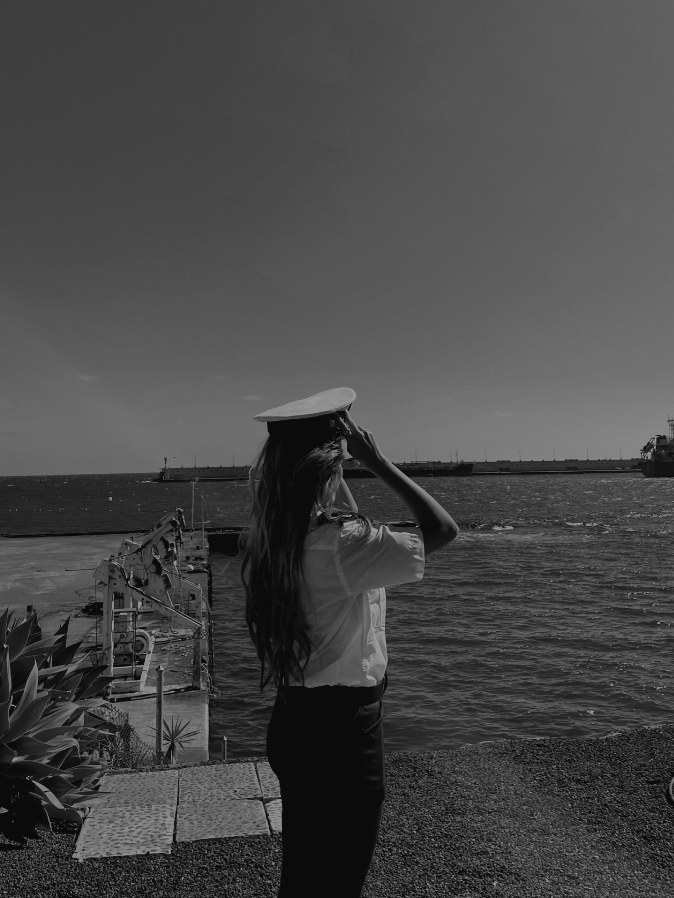

Soy Mery, Piloto de la Marina Mercante y la primera de mi familia en entrar en este sector. Nadie me explicó el camino — lo fui descubriendo a base de errores, un año perdido en burocracia, y aprender sobre la marcha lo que ninguna clase enseña. Hoy comparto lo que a mí me hubiera ahorrado ese año, para que tú no tengas que perderlo.

Esta idea no nació de una familia de navegantes. Nació de todo lo contrario: una familia donde nadie salía de su zona de confort, donde no había industria, ni conocimiento, ni referentes de este mundo. A mi hermano mayor tampoco le aconsejó nadie, estudió una carrera para acabar en una oficina, sin haber tenido otra opción sobre la mesa. Pero fue él quien un día me habló de la marina mercante. Sin saberlo, me abrió una puerta que él nunca tuvo. Si no fuera por él, hoy no estaría donde estoy.
Empecé desde cero, sin saber nada de este mundo. Por el camino sumé países nuevos cada pocos días, mares distintos, culturas que cambian de puerto en puerto y guardias que te enseñan a estar despierta cuando el cuerpo pide lo contrario. Aprendí idiomas a base de necesitarlos, aprendí a moverme en un mundo que no fue pensado para mí, y aprendí, sobre todo, a mirar distinto: donde antes solo veía un mar azul, ahora veo el sacrificio de quien trabaja en él.
¿Quieres el mismo camino, pero sin perder un año?